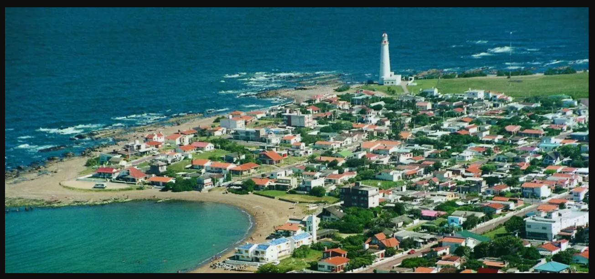

Bienvenido a Rocha - Uruguay
Nos complace recibirte en Rocha, uno de los rincones más encantadores de Uruguay. Aquí, podrás disfrutar de nuestras hermosas playas, paisajes naturales impresionantes y una rica cultura local que hace de Rocha un lugar único. Ya sea que estés aquí para explorar nuestras costas vírgenes, sumergirte en la tranquilidad de nuestras reservas naturales, o descubrir la historia y la tradición de nuestros encantadores pueblos, te invitamos a sumergirte en la calidez y hospitalidad de nuestra comunidad. Esperamos que tu tiempo en Rocha sea memorable y enriquecedor. Si necesitas ayuda o información durante tu estancia, no dudes en ponerte en contacto con nosotros. ¡Que disfrutes de tu visita!
